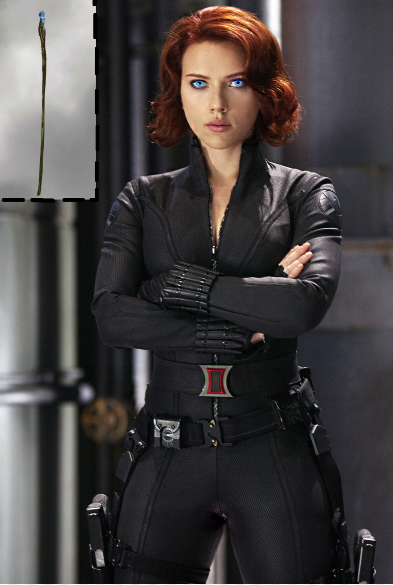
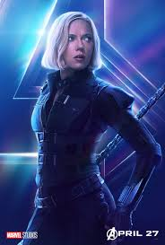

Чёрная вдова (англ. Black Widow) — название нескольких персонажей вселенной Marvel Comics. Самый первый и популярный носивший это прозвище персонаж — Наталья (Наташа) Альяновна Романова[6]. Была создана редактором Стэном Ли, писателем Доном Рико и художником Доном Хеком и дебютировала в Tales of Suspense # 52 в апреле 1964 года.
Чёрная Вдова в превосходной физической форме — владеет навыками гимнастики, балета, и акробатики; эксперт боевых искусств, в том числе карате, айкидо, бразильское джиу-джитсу, самбо, сават, ниндзюцу, различные стили кунг-фу; профессионально владеет холодным и огнестрельным оружием и навыками шпионажа.
Часто пользуется оборудованием, которое было изобретено ещё советскими учёными и инженерами и впоследствии улучшено и адаптировано техниками в Щ.И.Т.е. Обычно она носит выделяющиеся чёрные браслеты, в которых скрыты крюки, гранулы слезоточивого газа, электрические заряды, способные оглушить противника напряжением в 30000 вольт, а также пояс с металлическими дисками, на который помещается взрывчатка и другое оружие. Её костюм выполнен из стретч-кожи, на ладонях и ступнях есть присоски, что позволяет ей подниматься по стенам.
Физические характеристики Чёрной Вдовы были улучшены при помощи биотехнологий, что сделало её тело устойчивым к старению, болезням, а разум — к психологическому воздействию и чтению мыслей, а также дало ей ускоренное исцеление.

